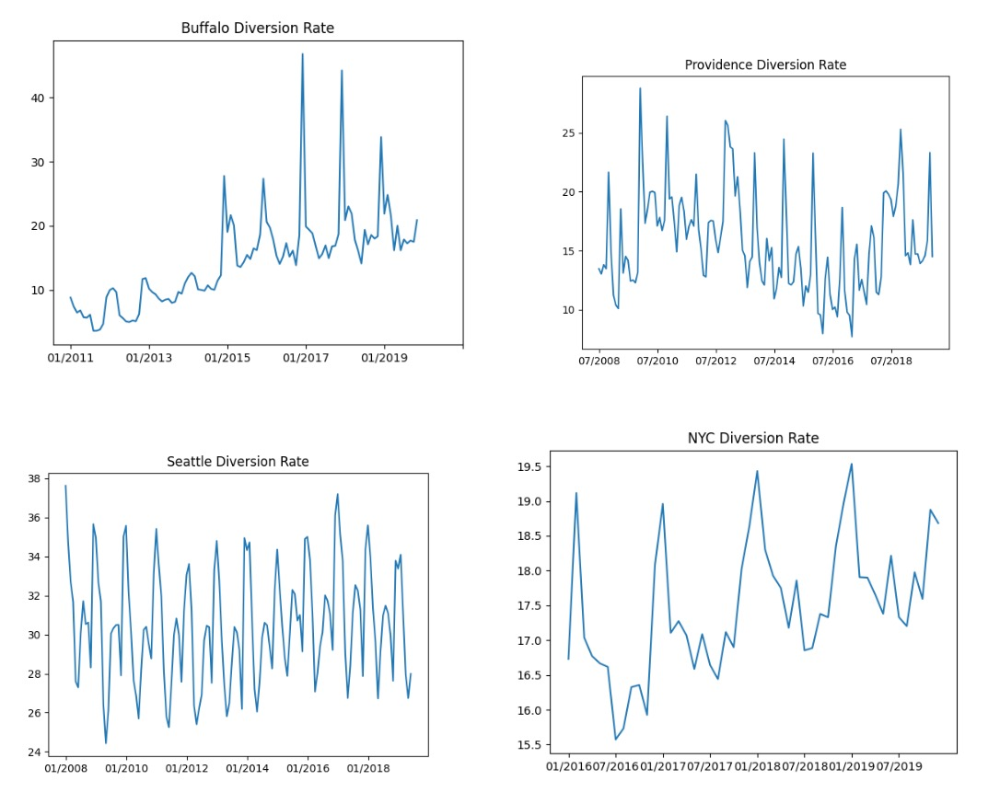

Does social media buzz about climate change lead to more sustainable consumer habits?
To answer this, we look at "social media buzz" as number of twitter interactions on tweets
containing the word "climate" and "sustainable consumer habits" as the recycling
diversion rate in different cities.
Recyling data sample:
| year |
place |
month |
diversion_rate |
|---|
| 2019 |
Providence |
1 |
14.580000000000002 |
| 2019 |
Providence |
2 |
14.82 |
| 2019 |
Providence |
3 |
13.83 |
| 2019 |
Providence |
4 |
17.62 |
| 2019 |
Providence |
5 |
14.71 |
| 2019 |
Providence |
6 |
14.729999999999999 |
| 2019 |
Providence |
7 |
13.919999999999998 |
| 2019 |
Providence |
8 |
14.149999999999999 |
| 2019 |
Providence |
9 |
14.580000000000002 |
| 2019 |
Providence |
10 |
15.85 |
| 2019 |
Providence |
11 |
23.32 |
| 2019 |
Providence |
12 |
14.510000000000002 |
Tweets data sample:
| year |
place |
month |
num_tweets |
num_likes |
num_retweets |
|---|
| 2019 |
Providence |
1 |
29 |
36 |
9 |
| 2019 |
Providence |
2 |
30 |
109 |
11 |
| 2019 |
Providence |
3 |
28 |
104 |
8 |
| 2019 |
Providence |
4 |
12 |
51 |
5 |
| 2019 |
Providence |
5 |
22 |
204 |
35 |
| 2019 |
Providence |
6 |
21 |
84 |
18 |
| 2019 |
Providence |
7 |
11 |
13 |
2 |
| 2019 |
Providence |
8 |
7 |
7118 |
1866 |
| 2019 |
Providence |
9 |
42 |
5024 |
1170 |
| 2019 |
Providence |
10 |
27 |
187 |
19 |
| 2019 |
Providence |
11 |
25 |
1110 |
246 |
| 2019 |
Providence |
12 |
23 |
79 |
4 |
Where is the data from?
We collected two types of data: number of twitter interactions about climate change and the waste diversion rate pertaining to recycling in four U.S. cities.
Recycling data:
The recycling data was obtained from open databases provided by municipal governments. We found government databases to be reputable (and the only) sources for recycling data on a city-wide level, and believe this to be the most accurate information we can get.
The recycling data from Buffalo, New York City, and Providence were directly downloaded from their respective government websites. Data from Seattle was only available through annual reports in PDF form, so we used an online PDF to CSV converter, and manually extracted the data, since the converter made the data really messy and hard to clean.
We chose to sample from these four cities because their recycling data was available by month. Having monthly data was important to us because we felt that assessing the impact of social media on recycling habits would be easier to examine in smaller time frames. Annual data would make it hard for us to identify any kind of meaningful relationship between social media and habits.
Twitter data:
As advised in class, attempts to scrape twitter were unreliable and provided incomplete data, so we had to go through their API. Through several developer accounts that we made, we made requests that counted the number of tweets, likes, and retweets from each location that mentioned the keyword “climate”’, grouped by month.
We chose to look for the word "climate" because it encompasses many of the related
discussions about climate change -- for example "warming climate," "our climate is warming,"
"climate science," "climate catastrophe," and "climate change" itself, just to name a few.
Although we will get some false positives by choosing this query method, we decided
that we would prefer this than missing out on tweets by using a more specific
query word/phrase. Moreover, by quick twitter searches on the word "climate,"
we found the vast majority of the results were indeed tweets about climate change.
Because we went through the Twitter API, we deem this source to be reputable. We were querying by location, however, so there may be tweets that were posted from the cities we are examining but did not have a location tagged to the tweet, meaning they didn’t end up in our data. This is an issue of consistency of tagging tweets by location, rather than an issue of the reputability of the source itself.
Our main feature of interest is the number of tweets, although we’re interested in the possibility that other features (likes and retweets) are also important indicators of user engagement with these tweets. This is because we deemed a post with 10 likes and 10 retweets to be weighted more than a post with 0 likes and 0 retweets. Therefore, to get the full number of “interactions,” we will sum 1 (the post itself) + num_likes + num_retweets.
One challenge was that each developer account had a limit of 50 query requests that could be made per month, which meant that using the three developer accounts we had access to (the fourth is still waiting to be approved), we weren’t able to get the Twitter data this month to match the all of the recycling data we collected. Because we had to split requests for Tweets in Seattle and Manhattan by month due to the high volume (the API would only return 500 tweets per request), whereas we could make a single request for an entire year of data from Buffalo or Providence, we were able to get three years of Twitter data from Providence, two years from Buffalo and Seattle, and 4 months of data from Manhattan.
How clean is the data? Does this data contain what you need in order to
complete the project you proposed to do?
Recycling data:
All the recycling data is in one csv/Pandas dataframe, with fields for the city, month, year, and diversion rate. The diversion rate is calculated as the total amount of recycling waste divided by the total amount of waste, including recycling. In all, there are 431 data points, where each datapoint is the diversion rate for one city for a specific month. The Providence and New York datasets already had the diversion rate calculated, but we had to calculate this rate for the Buffalo and Seattle datasets.
For the recycling data points we have, there are no missing values or duplicates. When initially reading in data, there were some data type issues, but we were able to resolve these by changing the type in Pandas.
If we look at the range of diversion rates for each city, there are fairly large differences between the cities. Buffalo has the largest changes in diversion rate with a minimum of about 3.6% and a maximum 46.7%. These are also the minimum and maximum values for all the cities. Another thing we noticed is that for all the cities the diversion rate peaks every January. This is definitely something we should look into when we are doing our analysis.

One issue we did run into is that for some cities we have data that goes back farther than others. In particular, the New York City data only goes back to 2016, whereas the Seattle and Providence datasets go back to 2008. This means that we will either have to find more datasets for other cities that have data going back farther, or we will have to throw data away for the years that we do not have data for all the cities. The amount of recycling data we can use will also depend on how far back we can get twitter data for. If we can only get the twitter data for the last few years we will have to throw away the recycling data for the years we do not have relevant twitter data for.
Twitter data:
Unfortunately, because of the Twitter API’s request limit, we weren’t able to get uniform samples across all of our locations (we have many more months of Providence tweet statistics than we do for Manhattan)--we’re hoping that by creating more Dev accounts we’ll be able to fill out this sample, but if this isn’t possible we might not be able to use this data in our final report, which would be unfortunate, as Manhattan is our most urban datapoint whose environmental activity would be very interesting to contrast with Buffalo’s.
There are several notable spikes in Twitter activity, such as August and September of 2019, which might correspond with Greta Thunberg’s activism, and June of 2019 in Seattle. However, for the most part no visible trends have been spotted in the data, which seems to be randomly distributed.
Summary of challenges and observations
A main challenge we faced was first understanding the twitter API and then collecting the data we wanted with the limited number of pull requests that the API allowed for. We initially made a pull request per month per city, which allowed us to do the bulk of the cleaning all in one step, before saving it as a csv. However, after seeing how limited our pull requests were, we switched methods to make each pull request contain as many tweets as possible, pulling for each year (or less than a year, if the city had over 500 tweets in a year), outputting to a csv, and then cleaning that csv to be in the form we wanted. Though this increased the amount of cleaning we had to do, it allowed us to get more data than we would have otherwise.
In the next week, we hope to open more Twitter dev accounts to collect more data from New York, and potentially Seattle and Buffalo to get a more uniform Twitter sample across locations. Whereas we were initially intending to track climate discussion and recycling rates over the course of the decade, and in doing so reveal trends around the release of various bits of groundbreaking climate science, the limited range of our dataset makes this impossible (although we still look forward to examining whether a jump in climate awareness appears after the Climate Summit in October 2018). In general, our plan remains the same as before: we’ll perform correlation tests between each of our Twitter variables and the recycling data (after normalizing each city’s Twitter activity by its population).